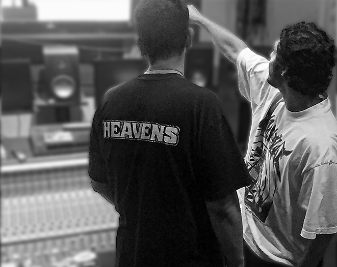

Here at Shock Value Records, we transform your raw tracks into polished, professional-quality songs ready for streaming, radio, and beyond. With expert mixing, your vocals and instrumentals are balanced, enhanced, and given depth using EQ, compression, reverb, and other effects. Mastering takes it further by ensuring your song achieves maximum clarity, loudness, and consistency across all playback systems. Whether it’s Hip-Hop, Pop, EDM, Rock, or Jazz, your music will sound its absolute best, meeting industry standards for platforms like Spotify, Apple Music, and YouTube. Let your creativity shine with a sound that’s clean, powerful, and unforgettable.

From your first take to creating a fully produced song, our recording and production services provide the foundation your music deserves.
Capture the best performances with high-quality recording equipment and expert engineering. Then, bring your vision to life with creative production techniques, whether it’s building instrumentals from scratch, arranging tracks, or adding unique effects. Whether you’re a solo artist, band, or producer, we’ll help you create dynamic, engaging music that stands out in any genre. Your sound starts here, ready to inspire and connect with listeners worldwide.